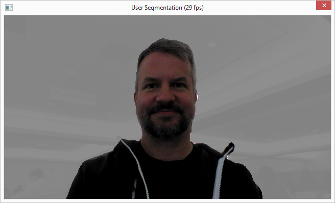
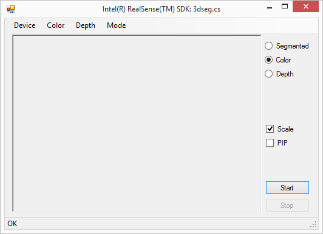
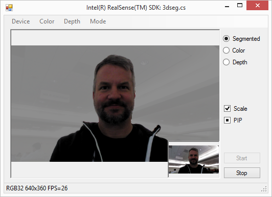

The FF_3DSeg and FF_3DSeg.cs are two sample applications to demonstrate the user segmentation feature.
The C++ FF_3DSeg sample is a console application, which supports the following command line options:
|
-load |
Explicitly load the specified module. |
|
–nframes |
Specify the maximum number of frames to record. |
|
-record |
Enable file recording. Use the -file option to specify the recording file name. |
|
–file |
Specify the recording or playback file name. If -record is not specified, the sample plays back the specified file. Otherwise, the sample records the camera data to the specified file.
|
|
-help |
Print out the help message. |
Run the sample in a command window. The sample displays the segmented image in a pop up window, as similar to Figure 125:

Figure 125: User Segmentation Window
The FF_3DSeg.cs sample is a C# GUI application.
From the main menu, as illustrated in Figure 126, you can select the following items:
| • | Device: Select the input device. |
| • | Color/Depth: Select the input stream resolutions. |
| • | Mode: Select the operating mode as follows: |
| ▪ | Live: Streaming from the live camera. |
| ▪ | Playback: Streaming from a file. |
| ▪ | Record: Streaming from the live camera and save the content to a file. |
There are a set of controls on the right panel:
| • | Segmented: Display the segmented image in the display panel. |
| • | Color: Display the color image in the display panel. |
| • | Depth: Display the depth image in the display panel. |
| • | Scale: scale the image to the display panel resolution |
| • | PIP: show the last two image types selected in the picture in picture mode. |

Figure 126: The 3dseg.cs Sample Main Window
Click the Start button to start streaming and the Stop button to stop streaming. The sample shows the segmented image (or any other image type selected) in the display panel, similar to Figure 127:

Figure 127: The 3dseg.cs Sample Streaming in Process